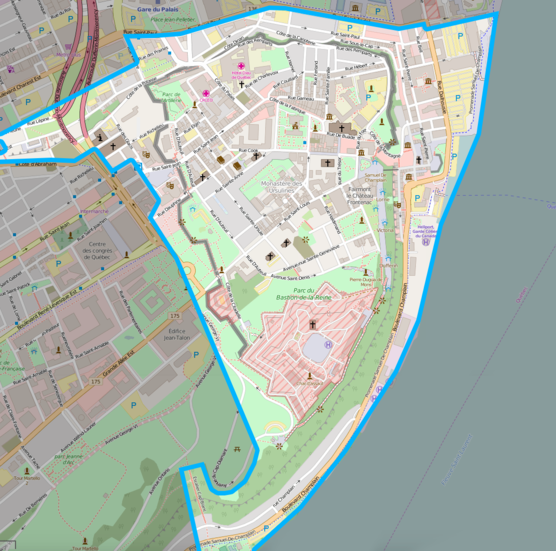

L'épreuve se déroule dans le vieux Québec. Les équipes sont déposées en bus et reçoivent une carte pour suivre un parcours culturel.
Le rallye n'est pas chronométré, mais un temps maximum est imposé. Ce temps est suffisant pour permettre à toutes les équipes de terminer l'activité sereinement.
Les équipes doivent respecter les règles de sécurité à tout moment et avancer en tant que piétons tout au long du parcours.
Chaque équipe dispose d'une feuille de route avec plusieurs postes. Une question est posée à chaque poste, sans besoin de connexion Internet.
Les questions portent sur l'histoire, la logique et l'observation. Les équipes sont autonomes et ne doivent pas communiquer entre elles.
Le classement se base sur le nombre de postes visités et de bonnes réponses. Le dépassement du temps limite entraîne une pénalité de points.
| Critère | Points |
|---|---|
| Poste correct visité | +? point |
| Bonne réponse | +? point |
| Dépassement du temps | -50% des points |
Pour plus d'informations, consultez le site du Collège Stanislas ou la ville de Québec.